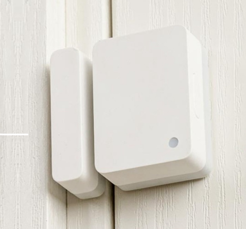
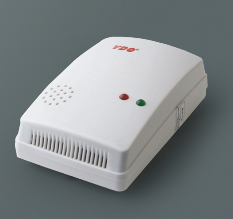

...
Internet of Things - Smart Home Security System
The intelligent home security system realizes real-time monitoring and
protection of the home environment through various sensors and
networking equipment. With the help of Internet of Things technology,
this system realizes the intelligent and remoteization of home security.
First of all, install door and window sensors on doors and windows. When
doors and windows are opened abnormally, an alarm message will be sent
to the user's mobile phone immediately. Secondly, the room is
equipped with a high-definition camera, which can remotely view the
situation at home in real time, and also has a mobile detection
function. Once abnormal activity is detected, the alarm will be
triggered immediately. In addition, smoke alarms and gas alarms can
detect smoke and gas leaks in time and quickly notify users to take
measures. Finally, the smart door lock is not only convenient for users
to unlock, but also records the unlocking record. If there is any
abnormal unlocking behavior, an alarm will also be issued.
Sensor
1. Door and window sensors: Magnetic sensors are generally used to
determine the opening and closing state of doors and windows by
detecting changes in magnetic fields.
2. Smoke alarm: Photoelectric smoke sensor or ion smoke sensor is mostly
used. The former detects the scattering of light by smoke to alarm,
while the latter works by detecting the impact of smoke on ions.
3. Gas alarm: Semiconductor gas sensor or catalytic combustion gas
sensor is usually used. The former is sensitive to the change of
conductivity of a specific gas, and the latter uses the heat generated
by the combustion of combustible gas on the surface of the catalyst to
detect.
Data transmission
Common methods include Wi-Fi, Bluetooth, Zigbee, etc. Wi-Fi transmission
speed is fast and has a wide coverage range, but the power consumption
is relatively high; Bluetooth power consumption is low, which is
suitable for short-distance transmission; Zigbee has the characteristics
of low power consumption, self-networking, etc., which is suitable for
large-scale device connection.
Network protocol
The TCP/IP protocol will be used for the reliable transmission of data
in the network, and the MQTT (Message Queuing Telemetry Transport)
protocol, which is a lightweight message transmission protocol,
especially suitable for Internet of Things devices. Limited resources
and unstable network environment.
Security System Brand - Hikvision
Hikvision is the world's leading provider of security and
intelligent Internet of Things solutions. It was established in 2001 and
is headquartered in Hangzhou, China.
I. Technology integration
1. Sensor and data analysis
Hikvision uses various sensors in IoT, such as cameras, temperature
sensors, humidity sensors, etc., to collect a large amount of data.
Through advanced data analysis technology, these data are processed and
mined, valuable information is extracted, and support security
decision-making.
2. Edge computing and intelligent terminals
Integrate edge computing power into security equipment to enable local
data processing and analysis, reducing data transmission delay and
dependence on the cloud. For example, the smart camera can detect and
identify targets at the front end, and only upload key information to
the cloud.
3. Application of communication technology
Adopt a variety of IoT communication technologies, such as Wi-Fi,
Bluetooth, Zigbee, etc., to realize the interconnection between security
devices. At the same time, it also uses the high-speed and low-latency
characteristics of 5G technology to improve the efficiency of remote
monitoring and data transmission.
II. Product and Solution Innovation
1. Intelligent security Internet of Things platform
A comprehensive Internet of Things platform has been created to
connect different types of security equipment to unified management, and
realize centralized monitoring, remote control and intelligent
scheduling of equipment.
2. Smart home security
Combined with IoT technology, a series of smart home security products
have been launched, such as smart door locks, smart cameras, smart
sensors, etc., to provide all-round security protection and convenient
life experience for home users.
3. Smart city security
In the construction of smart cities, the integration of urban-level
security systems is realized through IoT, including traffic monitoring,
public area monitoring, environmental monitoring, etc., to improve the
overall security and management efficiency of the city.
III. Competitive advantage in the market
1. Technology accumulation and R&D investment
With long-term accumulation and continuous R&D investment in the
security field, Hikvision can quickly adapt to the development of IoT
technology and launch competitive products and solutions.
2. Brand influence
As a well-known brand in the security industry, Hikvision has a high
reputation and customer trust in the market, which helps it be more
acceptable to customers when promoting IoT security products.
3. Channel and service network
Extensive sales channels and perfect after-sales service network can
ensure the rapid promotion and after-sales support of IoT security
products to meet the needs of customers.
IV. Challenges and coping strategies
1. Data security and privacy protection
With IoT devices collecting and transmitting a large amount of data,
data security and user privacy protection have become important
challenges. Hikvision needs to strengthen measures such as data
encryption, access control and security authentication to ensure the
security of user data.
2. Industry standards and compatibility
The IoT industry lacks unified standards, and there are problems with
compatibility between different devices and systems. Hikvision should
actively participate in the formulation of industry standards and
promote product compatibility and interoperability.
3. Cyber security threats
The increase of IoT devices also brings more network security risks,
such as hacker attacks, malware, etc. Hikvision needs to strengthen its
network security protection capabilities and constantly update and
improve its security strategy.
IOT

